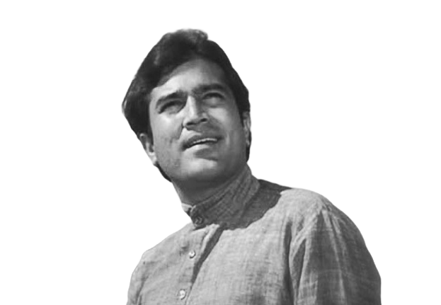

Biography
- Rajesh Khanna, born on December 29, 1942, was an iconic Bollywood actor, often referred to as the "first superstar" of Indian cinema. He made his debut in 1966 with "Aakhri Khat" and rose to fame with movies like "Aradhana," "Anand," and "Amar Prem."
- His charismatic performances and unique style endeared him to audiences, making him a household name and a symbol of romance on screen.
- Rajesh Khanna received numerous awards and accolades throughout his career, including multiple Filmfare Awards and the Padma Bhushan, one of India's highest civilian honors.
- Khanna died on 18 July 2012, after a period of illness. He has been honoured with a stamp and statue in his likeness, and a road renamed after him by the Prime Minister of India.
Remembering Rajesh Khanna
Let's honor the memory of this legendary actor by celebrating his contributions to Indian cinema and the everlasting impact he left on his fans.
"Zindagi badi honi chahiye, lambi nahi."